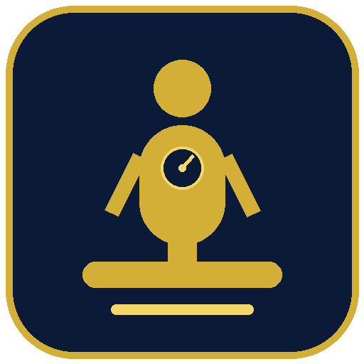

Check your Body Mass Index (BMI) quickly and completely offline. Enter your weight in kg and your height in cm or feet & inches to see your BMI, your category and the healthy weight range for your height.
BMI category with colour chip & visual bar • Healthy weight range • Works fully offline
⬇ Download APK (v1.0)General health information only — not medical advice. BMI does not directly measure body fat. Children, athletes, pregnant women and elderly people should consult a doctor for proper assessment.
Need help? WhatsApp: +92 305 7867149